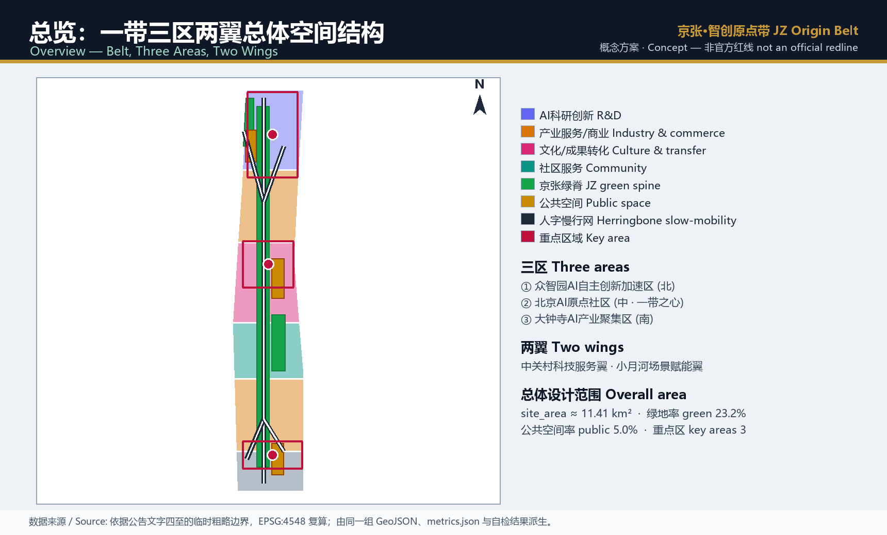
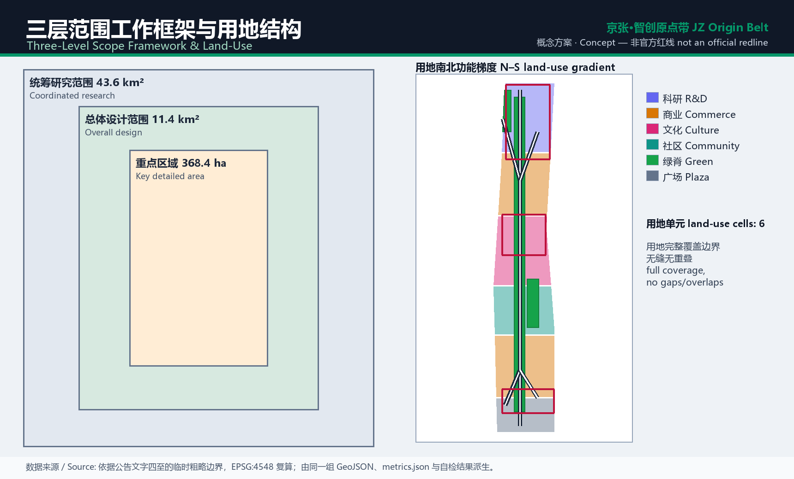
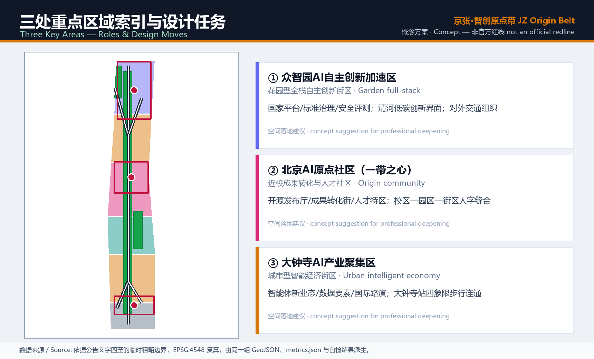
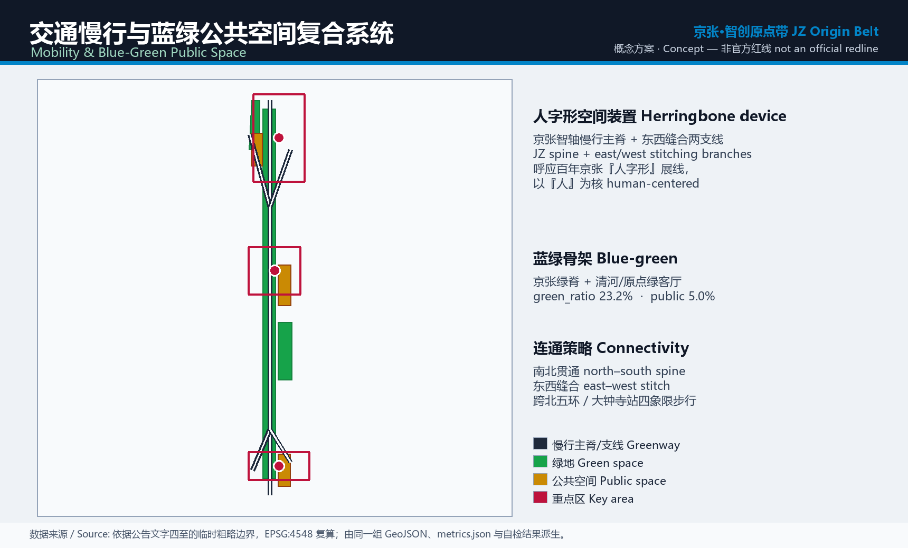
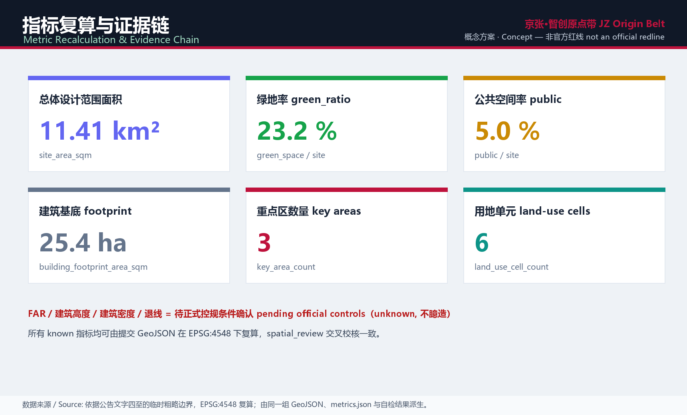

京张·智创原点带——百年京张AI创新带城市设计概念方案
以百年京张铁路『人字形』展线为空间与品牌原型，提出『京张·智创原点带 / JZ Origin Belt』概念方案：南北贯通、东西缝合、以『人』为核，将三区两翼、AI 场景、文化叙事与长期运营落到可复算的图层与指标。基于临时边界生成，保留精度警示，取得官方红线后须复算。
京张·智创原点带——百年京张AI创新带城市设计概念方案
设计依据与资料清单
本方案以北京市规划和自然资源委员会海淀分局发布的《百年京张AI创新带城市设计国际方案征集资格预审公告》为第一依据，并把面向智能体的开源征集任务书作为共创原则、三区两翼与六项任务的补充依据 来源 来源。所有空间判断先回到 brief/site-package/ 的临时边界、重点区域、用地枚举、指标范围与来源登记，再转译为可读设计。资料的用途边界严格遵守登记表：formal 可用资料用于正式论证，背景与临时资料仅用于讨论，不得升级为官方红线或审定结论 来源。
需要特别说明的是，仓库尚无官方精确边界，本包 geometry/site_boundary.geojson 与 geometry/key_areas.geojson 均标注为 provisional_constraint、official_boundary=false，只用于生成、自检、可视化与设计讨论，不能作为审批依据或精确面积依据；该组织方数据缺口不阻断内容评分，但取得官方红线后，用地、建筑、道路、绿地、公共空间、分期与指标都要重算 深度。边界与面积的解释可回到总体范围图层与复算 空间数据 指标。

三层范围工作框架
方案沿用公告的三层范围递进组织工作。统筹研究范围约 43.6 平方公里，回答 AI 产业生态、战略定位与未来城市形态；总体设计范围约 11.4 平方公里，落城市更新总体框架、用地结构、交通市政与风貌；重点区域约 368.4 公顷，对三处片区做详细设计 来源。三层不是割裂的图纸，而是同一条判断链：研究定方向、总体定结构、重点验落地，深度由三层框架与总体结构两项共同约束 深度 深度。
本方案的总体概念命名为「京张·智创原点带 / JZ Origin Belt」。「原点」取双重含义：北京 AI 原点社区是创新原点，京张铁路的历史起点是文化原点；「智创带」把三层范围转译为一条可生长的创新带。空间上形成「一脊三核两翼、人字缝合」结构：以京张遗址公园为绿脊主轴，以众智园、AI 原点社区、大钟寺为三核，以中关村科技服务翼与小月河场景赋能翼为两翼，用源自「人字形」展线的慢行网把东西两侧缝合 空间数据 空间数据。

| 层级 | 设计问题 | 方案回答 | 数据落点 |
|---|---|---|---|
| 统筹研究范围 | 产业生态与未来城市形态如何组织 | 建立「高校策源—开源协作—企业转化—公共体验—国际传播」创新链 | compliance_matrix.json |
| 总体设计范围 | 用地、更新、交通市政与风貌如何落图 | 用地/建筑/道路/绿地/公共空间/分期图层共同表达 | 空间数据 |
| 重点区域范围 | 三处片区如何达到详细设计深度 | 分别给定位、空间动作、AI 场景与实施依赖 | 空间数据 |
统筹研究范围产业与未来城市研究
统筹研究范围的核心任务是构建世界级 AI 创新生态体系。方案把海淀高校院所、头部企业、算力算法数据要素、孵化平台与科技服务组织成「五大功能」的空间协同：AI 全栈自主创新体系、世界级 AI 创新生态、AI+ 场景赋能新范式、智能化 AI 活力城市与 AI 治理全球话语权，均对应到三区两翼的具体承载 来源 标准。命名与视觉识别不停留在口号：品牌以「原点」符号与「人字」轨迹为核，可延展到导视、活动与数字界面，服务国际传播辨识度。
未来城市形态研究回答人工智能如何改变工作、生活、学习、交通与公共服务。方案不描述抽象技术愿景，而是把 AI 交通、连续绿色空间、创新服务设施与国际化生活氛围落成可定位的功能区、廊道与节点，回接可复核的空间结构 标准 空间数据。凡涉及全球活动、开发者社区、开放场景或朝圣路线的构想，一律表述为「概念建议、参考方案、可供专业团队深化研究」，不写成已确定的政府安排。
总体设计范围城市更新与控规深度城市设计
总体设计范围要求达到控制性详细规划的城市设计深度。方案提出以「一脊三核」为骨架的更新总体结构：识别低效与断裂空间，形成更新项目清单、产业功能比例与空间组织建议，并对综合承载做定性评估 标准 深度。geometry/land_use.geojson 沿南北向形成「科研—产业服务—文化—社区—商业—门户」的功能梯度，完整覆盖设计边界、无缝无重叠；geometry/buildings.geojson 表达重点片区的示意建筑基底 空间数据 空间数据。
开发强度与建筑控制采取「有几分证据说几分话」的原则。总建筑规模、容积率、建筑高度、建筑密度、绿地率、退线与道路红线在缺少官方控规条件时一律列为待确认，不以推测值冒充审定指标；建筑基底面积等可复算指标则与图层保持一致 深度 指标。交通、轨道、市政与配套设施在本范围内先给空间布局与实施路径，工程结论留待专业深化。
重点区域详细设计
重点区域详细设计是必选项，三处片区各有清晰定位与空间动作 深度 空间数据。众智园 AI 自主创新加速区定位「花园型全栈自主创新街区」，围绕国家平台、标准制定、安全评测、产业展示与清河低碳创新界面组织空间；北京 AI 原点社区作为「一带之心」，以近校成果转化、开源发布、人才特区与校区—园区—街区人字缝合为主线；大钟寺 AI 产业聚集区定位「城市型智能经济街区」，围绕智能体新业态、数据要素、国际路演与大钟寺站四象限步行连通展开。
三处片区的空间动作都落到图层与公共空间证据上，避免「打造示范区」式的空话 空间数据 来源。设计要求覆盖功能业态、建筑规模与形态、拆改留分类、公共空间系统、交通组织与实施项目；由于当前为临时边界，片区结论作为可讨论、可替换官方红线后重算的参考方案，不构成地块级拆改留或工程可行性判断。

| 重点片区 | 设计定位 | 空间动作 | AI 场景与运营 | 证据引用 |
|---|---|---|---|---|
| 众智园AI自主创新加速区 | 花园型全栈自主创新街区 | 清河低碳界面、产业展示、对外交通组织 | 自主模型测试、标准治理展示 | 空间数据 |
| 北京AI原点社区 | 近校成果转化与人才社区 | 校区—园区—街区人字缝合、成果发布 | 开源社区、人才特区服务 | 空间数据 |
| 大钟寺AI产业聚集区 | 城市型智能经济街区 | 大钟寺站四象限连通、商业更新 | 智能体新业态、国际路演 | 指标 |
AI 创新生态、人才画像与 AI+ 场景
方案建立面向 AI 人才与企业的空间需求画像，覆盖研发办公、开源协作、成果发布、企业服务、人才居住、社交学习、消费生活与国际交往 来源。AI+ 场景围绕交通、服务、消费、医疗、教育、法律与生活服务展开，每个场景说明服务对象、空间位置、数据来源、隐私边界、人工复核机制与运营主体，落到公共空间、慢行与绿地图层，而不是停留在概念词 空间数据 指标。治理遵守数据最小化、公开来源、可解释与人工复核原则，不做无法人工复核或过度监控的设计。
| 用户画像 | 典型需求 | 空间响应 | 自检边界 |
|---|---|---|---|
| 开源开发者 | 发布、协作、测试、声誉 | 原点社区开源发布厅、公共代码墙 | 不采集个人行为轨迹，仅聚合统计 |
| 初创团队 | 低成本办公、算力入口、试验场 | 众智园共享测试场、端侧算力驿站 | 算力与数据服务需另行授权 |
| 头部企业访客 | 展示、商务、国际接待 | 大钟寺国际路演客厅、站点接驳 | 企业标识与案例须清权 |
| 周边居民 | 通勤、休闲、社区服务 | 遗址公园慢行环、社区服务嵌入 | 不将居民画像用于商业推荐 |
| 高校师生 | 成果转化、跨校协作、慢行 | 校区—园区慢行缝合、转化驿站 | 校园数据与科研成果需授权 |
十张 AI 场景卡覆盖：01 开源发布厅、02 安全治理沙盒、03 端侧算力驿站、04 AI 慢行导航、05 大钟寺国际路演客厅、06 清河低碳创新廊、07 近校成果转化街、08 数据要素会客厅、09 AI 生活服务样板街、10 全球 AI 活动周路线；其中城市智能体沙盒、端侧算力驿站与慢行断点诊断三项作为可控的产业测试验证场景 深度。
用地、建筑规模与拆改留方案
用地方案依据国土空间用地用海分类的可校验代码表达，形成完整、闭合、无缝的分区，不使用自造分类替代 标准 空间数据。南北功能梯度把科研（0802）、商业服务（05）、文化（0803）、社区服务（0702）与广场（1403）依次组织，绿脊以公园绿地（1401）贯通。建筑方案区分保留、改造、更新、新建与待确认对象，明确基底、功能与体量的建议层级，缺现状与权属资料时只给方法与待校准清单。
建筑规模与强度指标与 metrics.json 和图层保持一致：可由几何复算的建筑基底面积如实给出，容积率、建筑高度、建筑密度、绿地率与退线等在缺官方条件时列为 unknown 或待确认，不用固定数值制造精确感 深度 深度。拆改留仅作为方法与分类框架，不构成地块级结论。
交通、轨道、市政与公共服务设施
交通方案回应轨道站点一体化、道路微循环、慢行断点、对外交通、停车与非机动车停放的要求，重点覆盖北五环、遗址公园跨环路节点、五道口、清华东路西口与大钟寺站周边 深度 空间数据。慢行网以「京张智轴」主脊加东西两条「人字形」缝合支线组织，串联三核与公共空间；道路与慢行图层保持在提交边界内，与绿地、公共空间相互校核。当前边界为临时，交通结论作为临时设计讨论，红线与线位留待专业深化。
市政与公共服务覆盖 AI 产业服务设施、创新服务平台、人才生活服务、新型基础设施、分布式能源与端侧算力，并与传统市政融合 深度 空间数据。方案说明设施类型、空间布局与分期逻辑；管线、能源、排水、防洪与消防等工程资料缺失时列为正式深化前置条件，不写成审定容量。
蓝绿空间、公共空间与城市风貌
蓝绿系统以京张遗址公园「绿脊」为骨架，统筹清河、小月河与周边高校、企业、社区的出行需求，提出南北贯通、东西连通的步道与绿色空间，识别慢行断点、跨环路节点与公园南北端景观节点 深度 空间数据。绿地与公共空间比例在正文解释设计意义，完整数值保存在指标文件；绿脊与原点广场共同构成日常交往与活动的公共客厅 指标 空间数据。

城市风貌融合京张铁路历史文化、中关村创新文化与 AI 新文化，利用清华园火车站、北影等文化资源，提出城市基调、建筑界面与公共艺术引导 标准。导视、文化符号、国际传播叙事、三处 AI 朝圣地标（原点纪念台、人字枢纽、大钟寺智核）与荣誉展示体系均要求清权来源；风貌控制分清官方管控、设计建议与待确认条件，不在缺文保或控规依据时给伪精确控制线。
更新项目清单、实施政策与分期计划
实施方案形成可审查的更新项目清单，说明位置、类型、功能、依赖条件、阶段与评估指标；政策建议覆盖城市更新统筹、空间供给、运营机制、产业服务、公共参与与数据治理 深度 空间数据。缺权属、资金与审批路径时，项目写成实施风险而非落地承诺。
| 项目编号 | 项目名称 | 类型 | 主要依赖 | 证据引用 |
|---|---|---|---|---|
| JZ-01 | 遗址公园慢行断点缝合 | 公共空间/交通 | 道路红线、桥下空间复核 | 空间数据 |
| JZ-02 | 众智园清河创新界面 | 蓝绿/产业展示 | 河道蓝线、生态与防洪 | 空间数据 |
| JZ-03 | 原点近校成果转化街 | 城市更新/产业服务 | 校区边界、权属、首层业态 | 空间数据 |
| JZ-04 | 大钟寺站四象限步行连通 | 轨道一体化/慢行 | 站点、交叉口、市政管线 | 空间数据 |
| JZ-05 | AI 公共服务与端侧算力节点 | 新基建/公共服务 | 能源、算力、运营主体 | 空间数据 |
| JZ-06 | 全球 AI 活动周公共路线 | 运营/品牌 | 公共空间许可、活动安全、清权 | 深度 |
分期区分「征集设计周期」与「实施推进路径」：近期以轻量设施、运营活动与服务平台在原点社区试点，中期推进众智园更新，远期覆盖大钟寺与南门户。年度活动体系、开发者社区、场景开放日与国际传播机制均说明运营对象、频率、责任边界与转化路径，不写成已确定安排。
指标体系、面积复算与合规矩阵
指标体系分三类：可由几何直接复算的空间指标（面积、绿地率、公共空间率、建筑基底、用地单元数）、需官方控规支撑的管控指标（容积率、高度、密度、退线、道路红线）、需运营数据校准的绩效指标（AI 创新指数、人才密度、场景使用频次）深度 指标。第一类如实复算并与空间复核一致，第二类列为待确认，第三类标注为长期校准，避免把运营愿景写成审定条件 指标 指标。

合规矩阵是任务响应性的主控文件：公告 1.3、1.4、1.5 与 agent.1–agent.6 的每一项都对应到章节、图层、指标、图纸、HTML、来源、假设与自检项 标准。未覆盖任一必选任务，方案不进入正式专业评分；本包通过 spatial、visual 与 professional 三项自检交叉校核指标与覆盖一致性。
风险、版权与合规说明
要求双语言。 本方案主文件为中文，并提供完整英文对照 proposal.en.md；A3/A0、HTML 与含文字图件均提供对应语言副本，图件采用中英双语标注。风险与缺资料清单由风险深度项、约束图层与场地包共同校核 深度 空间数据。官方边界、重点区红线、控规、道路、地块、建筑、市政与文保等缺口进入 assumptions.json 与正文风险章节，相关结论一律降级为待确认；完整专业核对保存在标准矩阵 来源。
本方案不声称官方批准、审定控规、最终土地权属、最终建设规模或保证实施。所有图片、图纸、数据与代码资产由声明的 AI agent 生成或使用清权公开来源，来源与授权在 sources.json 与 report/copyright_statement.md 说明；HTML 页面不加载远程脚本、地图瓦片、字体、iframe、表单或外部 API。AI agent 对事实、来源、版权、空间数据、指标与表达负责，维护者与专业评审可据自检、空间复核与合规矩阵要求返修或拒绝。
参考资料
- brief/public-brief.md 与 brief/site-package/design_brief.json
- brief/site-package/allowed_design_space.json 与 enums/、ranges/planning_limits.json
- brief/site-package/standards/standards.json 及其本地参考快照
- data/source_registry.json 与 data/processed/ 系列导航文件
- 完整机器索引：sources.json、metrics.json、compliance_matrix.json、standard_matrix.json、design_depth_matrix.json
- 书目入口依据场地包登记，完整出处与许可见结构化来源清单 来源